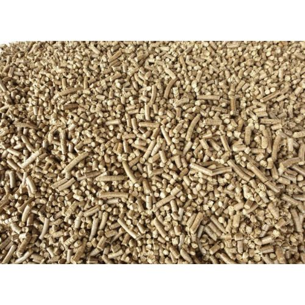

Plants reviewed by CAQM for paddy-residue pellet co-firing.

Ex-situ / Pellet-based solutions
Densify straw.
Standardise fuel.
Pelletisation turns loose paddy straw into a compact, tradable fuel. The opportunity is real only when production quality, procurement and end-use demand are designed together.
01Why Pellets
A bridge between seasonal residue and industrial demand.
Pelletisation makes bulky straw easier to handle, transport and use. The commercial test is whether producers can meet buyer specifications at a competitive delivered cost under dependable procurement.
Crop-residue pellets used across those plants.
Planned pellet use for the four Punjab plants.
Actual co-firing relative to the annual target.
Funding status / checked September 2026Phase I has closed
The MNRE BioUrja portal says the previous programme ended on 31 March 2026. Pellet and briquette proposals received from 10 October 2024 onward await Phase II budget approval. This should be confirmed before investment.
02How It Works
Five operations determine the fuel that reaches the buyer.
Every stage changes cost and quality. The buyer specification should therefore shape the supply chain from the field onward.
Collect
Bale residue quickly and minimise soil or foreign-material contamination.
Pre-Process
Shred and screen straw to a consistent feed size.
Dry & Densify
Control moisture and compress material through the pellet mill.
Test & Store
Check size, ash, durability and calorific value, then protect from moisture.
Deliver
Match dispatches to the plant schedule and contracted specification.
03Demand Routes
One product, three different buyers.
The route changes the specification, procurement cycle and commercial risk. Select a buyer to compare what must be solved.
Large anchor demand
Co-fire pellets with coal.
Thermal plants can absorb significant volumes, but suppliers need predictable tenders, timely payments and clear technical acceptance criteria.
Distributed demand
Replace part of conventional kiln fuel.
CAQM Direction 92 creates a Punjab demand signal. Conversion must now be supported by fuel availability, compliance guidance and verification.
Cluster demand
Supply compatible boilers and furnaces.
Industrial buyers can diversify fuel, but technical trials and long-term contracts are required before producers invest at scale.
04Binding Constraints
Supply, transmission and demand must close together.
A pellet plant can be technically sound and still fail if any one side of the market remains uncertain.
System layerSupplyTransmissionDemand
Constraint
Seasonal feedstock, moisture and contamination affect input quality.
Storage, transport and working capital raise delivered cost.
Tenders can be irregular and specifications differ across buyers.
What to build
Catchment plans, quality-linked procurement and aggregator capacity.
Regional depots, testing, digital traceability and scheduled dispatch.
Multi-year offtake, transparent procurement calendars and enforcement.
Result
Consistent feedstock enters the plant.
Pellets reach buyers at a competitive delivered cost.
Demand is credible enough to unlock investment.
05Punjab Pathway
Move from plant subsidy to market design.
Scale requires credible buyers, common quality standards and performance data.
- Map anchor demand
Publish demand, specifications and procurement windows across power plants, kilns and industrial clusters.
- Standardise quality
Use common testing for moisture, ash, durability and calorific value.
- Aggregate procurement
Combine buyer demand to reduce uncertainty for small producers and end users.
- Finance the operating cycle
Link working capital to contracted offtake and verified inventory.
- Track actual use
Measure accepted and combusted tonnes, payments and substitution, not installed capacity alone.
Sources: CAQM Punjab review, November 2025 · Ministry of Power SAMARTH · CAQM Direction 92 · MNRE BioUrja status. Photograph: Prime Biofuels product listing, accessed September 2026.
The enabling layer